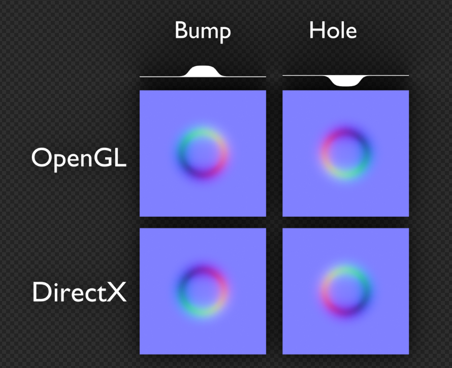

둘러보기
Vector
Swizzling
벡터의 요소들을 이용 임의의 순서로 구성가능
float4 A = float4(1, 2, 3, 4);
A.x == 1
A.xy == float2(1, 2)
A.wwxy == float4(4, 4, 1, 2)
A.rgba == float4(1, 2, 3, 4)
내적 외적
- 내적과 외적 공식.
- 내적과 외적을 시각적으로 생각할 수 있어야 함.
- 이거 이름 햇갈리기 쉬움.
| 내적 | Dot Product | Inner Product |
- 닷은 점이니까 모이는건 내적
- 점이니까 두개 모아서 하나가 됨.
- 하나로 모이니 두 벡터 사이의 각도를 구할 수 있음.
- 각도니까 cos연산 들어감.
- https://rfriend.tistory.com/145
- 교환법칙이 성립
| 각도 | 값 |
| ---- | --- |
| 0 | 1 |
| 90 | 0 |
| 180 | -1 |
| -270 | 0 |
1
|
|
0-------+------ 0
|
|
-1
| 외적 | Cross Product | Outer Product |
- 크로스는 삐죽하니까 외적으로 외울껏.
- X 니까 삐저나옴.
- X가 직각이니 수직 구할때 씀.
- https://rfriend.tistory.com/146
- 교환법칙 성립안함
Matrix
If w == 1, then the vector (x,y,z,1) is a position in space. If w == 0, then the vector (x,y,z,0) is a direction
// 순서주의
TransformedVector = TranslationMatrix * RotationMatrix * ScaleMatrix * OriginalVector;
// ref: https://www.3dgep.com/3d-math-primer-for-game-programmers-matrices/#Rotation_about_an_arbitrary_axis
이동행렬
| 1 0 0 x |
| 0 1 0 y |
| 0 0 1 z |
| 0 0 0 1 |
스케일
| x 0 0 0 |
| 0 y 0 0 |
| 0 0 z 0 |
| 0 0 0 1 |
X축 회전
| 1 0 0 0 |
| 0 cos -sin 0 |
| 0 sin cos 0 |
| 0 0 0 1 |
Y축 회전
| cos 0 sin 0 |
| 0 1 0 0 |
| -sin 0 cos 0 |
| 0 0 0 1 |
Z축 회전
| cos -sin 0 0 |
| sin cos 0 0 |
| 0 0 1 0 |
| 0 0 0 1 |
임의의 N축 회전
s : sin
c : cos
ic: 1 - cos
| ic * NxNx + c | ic * NxNy - s * Nz | ic * NzNx + s * Ny | 0 |
| ic * NxNy + s * Nz | ic * NyNy + c | ic * NyNz - s * Nx | 0 |
| ic * NzNx - s * Ny | ic * NyNz + s * Nx | ic * NzNz + c | 0 |
| 0 | 0 | 0 | 1 |
Mesh
// (0,1) +----+ (1,1)
// | |
// (0,0) +----+ (1,0)
//
// 2 +----+ 3
// | |
// 0 +----+ 1
Mesh mesh = new Mesh();
Vector3[] vertices = new Vector3[4] {
new Vector3(0, 0, 0),
new Vector3(1, 0, 0),
new Vector3(0, 1, 0),
new Vector3(1, 1, 0)
};
int[] tris = new int[6] {
// lower left triangle
0, 2, 1,
// upper right triangle
2, 3, 1
};
Vector2[] uv = new Vector2[4] {
new Vector2(0, 0),
new Vector2(1, 0),
new Vector2(0, 1),
new Vector2(1, 1)
};
Vector3[] normals = new Vector3[4] {
-Vector3.forward,
-Vector3.forward,
-Vector3.forward,
-Vector3.forward
};
mesh.vertices = vertices;
mesh.triangles = tris;
mesh.uv = uv;
mesh.normals = normals;
Topology
| MeshTopology |
|---|
| Points |
| Lines |
| LineStrip |
| Triangles |
| Quads |
MehsFilter mf = GetComponent<MeshFilter>();
mf.mesh.SetIndice(mf.mesh.GetIndices(0), MeshTopology.Points, 0);
public void SetIndices(int[] indices, MeshTopology topology, int submesh, bool calculateBounds = true, int baseVertex = 0);
메쉬토폴로지를 변경시켜 좀 더 그럴듯한 효과를 얻을 수 있다.
Ref
Coordinate
- 좌표공간

유니티 정의 positions
| position | Space | AKA | 타입 | 설명 |
|---|---|---|---|---|
| positionOS | Object | Local / Model | float3 | |
| positionWS | World | Global | float3 | |
| positionVS | View | Camera / Eye | float3 | 카메라에서 바라볼때 |
| positionCS | Homogeneous Clip | float4 | 카메라 시야에서 안보인 것은 제외, Orthogonal 적용 | |
| positionNDC | Homogeneous Normalized Device Coordinate | float4 | [ 0, w] : (x, y, z, w) |
내가 임의로 정한것
| 이름 붙여봄 position | Space | 타입 | 설명 |
|---|---|---|---|
| ndc | Nonhomogeneous Normalized Device Coordinate | float3 | [-1, 1] : PerspectiveDivision * 2 - 1 |
| uv_Screen | Screen | float2 | [ 0, 1] : PerspectiveDivision |
| positionScreen | ViewPort | float2 | [화면 넓이, 화면 높이] |
공간 변환 그림 예
예1)

예2)

UNITY_MATRIX
| Matrix | 설명 |
|---|---|
| UNITY_MATRIX_M | renderer.localToWorldMatrix |
| UNITY_MATRIX_V | camera.worldToCameraMatrix |
| UNITY_MATRIX_P | GL.GetGPUProjectionMatrix(camera.projectionMatrix, false); |
- localToWorldMatrix
- 유니티 4까지는 GPU에 넘겨주기전에 스케일을 가공하여
- renderer.localToWorldMatrix, transform.localToWorldMatrix가 달랐으나 지금은 같음.
| 카메라 관련 | 렌더링(UNITY_MATRIX_)의 뷰 전방은 -z. 카메라 행렬은 에디터와 동일하게 +z를 앞으로 사용 |
|---|---|
| UNITY_MATRIX_V | cam.worldToCameraMatrix |
| unity_WorldToCamera | Matrix4x4(cam.transform.position, cam.transform.rotation, Vector3.one) |
| UNITY_MATRIX_I_V | cam.cameraToWorldMatrix |
| unity_CameraToWorld | Matrix4x4(cam.transform.position, cam.transform.rotation, Vector3.one).inverse |
| UNITY_MATRIX_P | GL.GetGPUProjectionMatrix(camera.projectionMatrix, false) |
| unity_CameraProjection | cam.projectionMatrix |
| UNITY_MATRIX_I_P | GL.GetGPUProjectionMatrix(camera.projectionMatrix, false).inverse |
| unity_CameraInvProjection | cam.projectionMatrix.inverse |
OS ----------------------- Object Space
| UNITY_MATRIX_M * OS
WS ----------------------- World Space
| UNITY_MATRIX_V * WS
VS ----------------------- View Space
| UNITY_MATRIX_P * VS
CS ----------------------- Homogeneous Clip Space
| NDC = CS * 0.5
| NDC.x = NDC.x + NDC.w
| NDC.y = NDC.y + NDC.w // DirectX
| NDC.y = -NDC.y + NDC.w // OpenGL
| NDC.zw = CS.zw
NDC ---------------------- Homogeneous Normalized Device Coordinate [0..w]
| pd = (NDC.xyz / NDC.w); // [0, 1] : perspective divide
| ndc = pd * 2.0 - 1.0; // [-1, 1]
ndc ---------------------- Nonhomogeneous Normalized Device Coordinate [-1..1]
// com.unity.render-pipelines.universal/ShaderLibrary/Core.hlsl
struct VertexPositionInputs
{
float3 positionWS; // World space position
float3 positionVS; // View space position
float4 positionCS; // Homogeneous clip space position
float4 positionNDC;// Homogeneous normalized device coordinates
};
// com.unity.render-pipelines.universal/ShaderLibrary/ShaderVariablesFunctions.hlsl
VertexPositionInputs GetVertexPositionInputs(float3 positionOS)
{
VertexPositionInputs input;
input.positionWS = TransformObjectToWorld(positionOS); // UNITY_MATRIX_M
input.positionVS = TransformWorldToView(input.positionWS); // UNITY_MATRIX_V
input.positionCS = TransformWorldToHClip(input.positionWS); // UNITY_MATRIX_VP
float4 ndc = input.positionCS * 0.5f;
input.positionNDC.xy = float2(ndc.x, ndc.y * _ProjectionParams.x) + ndc.w;
input.positionNDC.zw = input.positionCS.zw;
return input;
}
// com.unity.render-pipelines.core/ShaderLibrary/SpaceTransforms.hlsl
TransformObjectToWorld - UNITY_MATRIX_M
TransformWorldToView - UNITY_MATRIX_V
TransformWViewToHClip - UNITY_MATRIX_P
TransformWorldToHClip - UNITY_MATRIX_VP
| _ProjectionParams | x | y | z | w |
|---|---|---|---|---|
| DirectX | 1 | near plane | far plane | 1 / farplane |
| OpenGL | -1 | near plane | far plane | 1 / farplane |
| UNITY_REVERSED_Z | UNITY_NEAR_CLIP_VALUE | UNITY_RAW_FAR_CLIP_VALUE | |
|---|---|---|---|
| DirectX | 1 | 1 | 0 |
| Vulkan | 1 | 1 | 0 |
| OpenGL | 0 | -1 | 1 |
NDC
// [0, w] // Homogeneous Normalized Device Coordinate
float4 positionNDC = GetVertexPositionInputs(positionOS).positionNDC;
// [0, 1] // Perspective Division
float3 pd = positionNDC.xyz / positionNDC.w;
// [-1, 1] // Nonhomogeneous Normalized Device Coordinate
float3 ndc = pd * 2.0 - 1.0;
// [0, 1]
float2 uv_Screen = positionNDC.xy / positionNDC.w;
// [0, screenWidth] / [0, screenHeight]
float2 positionScreen = uv_Screen * _ScreenParams.xy;
// float4 ndc = input.positionCS * 0.5f;
// input.positionNDC.xy = float2(ndc.x, ndc.y * _ProjectionParams.x) + ndc.w;
// input.positionNDC.zw = input.positionCS.zw;
NDC = float4(
(0.5 * CS.x ) + 0.5 * CS.w,
(0.5 * CS.y * _ProjectionParams.x) + 0.5 * CS.w,
CS.z,
CS.w
);
// pd = NDC.xyz / NDC.w
pd = float3(
(0.5 * CS.x / CS.w) + 0.5,
(0.5 * CS.y * _ProjectionParams.x / CS.w) + 0.5,
CS.z / CS.w
);
// ndc = pd * 2 - 1
ndc = float3(
(CS.x / CS.w),
(CS.y * _ProjectionParams.x / CS.w),
(CS.z / CS.w) * 2 - 1,
);
// uv_Screen = NDC.xy / NDC.w
uv_Screen = float2(
(CS.x / CS.w),
(CS.y * _ProjectionParams.x / CS.w)
);
// positionScreen = uv_Screen * _ScreenParams.xy
positionScreen = float2(
(CS.x / CS.w) * _ScreenParams.x,
(CS.y * _ProjectionParams.x / CS.w) * _ScreenParams.y
);
Normal
Pserspective Camera

// Find our current location in the camera's projection space.
Vector3 pt = Camera.main.projectionMatrix.MultiplyPoint(transform.position);
// Matrix4x4.MultiplyPoint
public Vector3 MultiplyPoint(Matrix4x4 mat, Vector3 v)
{
Vector3 result;
result.x = mat.m00 * v.x + mat.m01 * v.y + mat.m02 * v.z + mat.m03;
result.y = mat.m10 * v.x + mat.m11 * v.y + mat.m12 * v.z + mat.m13;
result.z = mat.m20 * v.x + mat.m21 * v.y + mat.m22 * v.z + mat.m23;
float num = mat.m30 * v.x + mat.m31 * v.y + mat.m32 * v.z + mat.m33;
num = 1 / num;
result.x *= num;
result.y *= num;
result.z *= num;
return result;
}
// z값 구하지 않으면
public Vector3 MultiplyPoint(Matrix4x4 mat, Vector3 v)
{
Vector3 result;
result.x = mat.m00 * v.x + mat.m01 * v.y + mat.m02 * v.z + mat.m03;
result.y = mat.m10 * v.x + mat.m11 * v.y + mat.m12 * v.z + mat.m13;
float num = mat.m30 * v.x + mat.m31 * v.y + mat.m32 * v.z + mat.m33;
num = 1 / num;
result.x *= num;
result.y *= num;
return result;
}
// 값을 대입하면
public Vector3 MultiplyPoint(Matrix4x4 mat, Vector3 v)
{
Vector3 result;
result.x = mat.m00 * v.x + 0 * v.y + 0 * v.z + 0;
result.y = 0 * v.x + mat.m11 * v.y + 0 * v.z + 0;
float num = 0 * v.x + 0 * v.y + -1 * v.z + 0;
num = 1 / num;
result.x *= num;
result.y *= num;
return result;
}
// 최종적으로
public Vector3 MultiplyPoint(Matrix4x4 mat, Vector3 v)
{
Vector3 result;
result.x = mat.m00 * v.x;
result.y = mat.m11 * v.y;
float num = -1 * v.z;
num = 1 / num;
result.x *= num;
result.y *= num;
return result;
}
(X, Y, linearEyeDepth)
positionNDC // [-1, 1]
X = positionNDC.x * linearEyeDepth / mat.m00
Y = positionNDC.x * linearEyeDepth / mat.m11
The zero-based row-column position:
| _m00, _m01, _m02, _m03 |
| _m10, _m11, _m12, _m13 |
| _m20, _m21, _m22, _m23 |
| _m30, _m31, _m32, _m33 |
The one-based row-column position:
| _11, _12, _13, _14 |
| _21, _22, _23, _24 |
| _31, _32, _33, _34 |
| _41, _42, _43, _44 |
UV
texel(TExture + piXEL) coordinate
Direct X
(0,0) (1,0)
+-------+-------+
| | |
| | |
+-------+-------+
| | |
| | |
+-------+-------+
(0,1) (1,1)
OpenGL / UnityEngine
(0,1) (1,1)
+-------+-------+
| | |
| | |
+-------+-------+
| | |
| | |
+-------+-------+
(0,0) (1,0)
- 수학적으로 바라보면 모든 2D좌표계를 OpenGL방식으로하면 좌표계를 헷갈릴 걱정이 없다. 하지만, 프로그래밍 하는 입장에서는 DirectX방식이 좀 더 와닿을 것이다.
Ref
- Computergrafik - Vorlesung 6 - Coordinate Systems
- Unity - shader의 World matrix(unity_ObjectToWorld)를 수작업으로 구성
- Unity - shader의 Camera matrix(UNITY_MATRIX_V)를 수작업으로 구성
- Unity - unity_CameraWorldClipPlanes 내장 변수 의미
- Unity - shader의 원근 투영(Perspective projection) 행렬(UNITY_MATRIX_P)을 수작업으로 구성
- 렌더링 파이프라인의 좌표 공간들
- Look At Transformation Matrix in Vertex Shader
- transform.localToWorldMatrix
- Renderer.localToWorldMatrix
- Camera.worldToCameraMatrix
- Camera.projectionMatrix
- GL.GetGPUProjectionMatrix
- http://blog.hvidtfeldts.net/index.php/2014/01/combining-ray-tracing-and-polygons/
Alpha
- 알파쓰면 Testing(discard)이나 Blend가 할 것 없이 성능 잡아먹는다.
- 구형 모바일 디바이스에선 Blend쪽이 성능이 잘 나오는 경향이 있었다.
SubShader
{
Tags // SubShader의 Tags는 Pass의 Tags와 다름.
{
"RenderPipeline" = "UniversalRenderPipeline"
// "IgnoreProjector" <<< 요놈은 URP에서 안씀
// for cutout
"Queue" = "AlphaTest" // 렌더순서
"RenderType" = "TransparentCutout" // 그룹핑(전체 노말맵같이 한꺼번에 바꾸어 그릴때 이용)
// for blend
"Queue" = "Transparent"
"RenderType" = "Transparent"
}
Pass
{
Tags
{
"LightMode" = "UniversalForward"
}
// https://docs.unity3d.com/Manual/SL-Blend.html
Blend A B
// http://docs.unity3d.com/Manual/SL-CullAndDepth.html
ZWrite <On | Off> // default: On
ZTest <(Less | Greater | LEqual | GEqual | Equal | NotEqual | Always)> // default: LEqual
}
}
- Blend
- 색 혼합 방법
- ZWrite
- Z 값을 기록할지 안할지 결정.
- ZTest
- Z 값이 씌여져 있는 상태를 읽어서(ZRead), 그려져도 되는지를 결정.

Alpha Cutout / Alpha Testing
- clip(texkill)을 이용
- 간편. sorting걱정 안해도 됨.
- 구형 모바일에서는 AlphaBlend 보다 성능이 안나오는 경향이 있음.
- 요즘은 AlphaTesting이 더 낳을지도
- 모바일(A11(ios), PowerVR 등)은 메모리와 대역폭을 줄이기위해 타일별 렌더링을 하는 TBDR(tile-based deferred rendering)을 이용함.
- 알파테스팅을 이용할시, 실제 보여지는지 여부를 알파테스팅이 끝날때까지 알 수 없으므로 Deffered 최적화를 방해함.
- 풀, 나무, 머리카락, 털 등...
- clip하여 너무 각지는게 보기 싫어질 정도면 blend를 잘 쓰자
- // if ZWrite is Off, clip() is fast enough on mobile, because it won't write the DepthBuffer, so no GPU pipeline stall(confirmed by ARM staff).

SubShader
{
Tags // SubShader의 Tags는 Pass의 Tags와 다름.
{
"RenderPipeline" = "UniversalRenderPipeline"
"Queue" = "AlphaTest"
"RenderType" = "TransparentCutout"
}
Pass
{
Tags
{
"LightMode" = "UniversalForward"
}
HLSLPROGRAM
...
half4 frag(VStoFS IN) : SV_Target
{
half alpha = ...;
clip(alpha - _Cutoff);
return half4(1, 0, 0, 1);
}
half4
ENDHLSL
}
}
// URP에선 `_ALPHATEST_ON` 여부로 할지 말지 결정하는 함수가 있다.
// https://github.com/Unity-Technologies/Graphics/blob/master/com.unity.render-pipelines.universal/ShaderLibrary/ShaderVariablesFunctions.hlsl
void AlphaDiscard(real alpha, real cutoff, real offset = real(0.0))
{
#ifdef _ALPHATEST_ON
clip(alpha - cutoff + offset);
#endif
}
Alpha Blend
- 이펙트에서 주로 쓰임
- Alpha Testing보다 디테일 살릴때...
- 불투명 유리
SubShader
{
Tags // SubShader의 Tags는 Pass의 Tags와 다름.
{
"RenderPipeline" = "UniversalRenderPipeline"
"Queue" = "Transparent"
"RenderType" = "Transparent"
}
Pass
{
ZWrite Off // 픽셀 중복으로 출력됨.
Blend SrcAlpha OneMinusSrcAlpha
Tags
{
"LightMode" = "UniversalForward"
}
}
}
ZWrite Off- 뒷면까지 렌더링하는게 문제가됨- 2Pass로 보이는면 랜더링
SubShader
{
Tags // SubShader의 Tags는 Pass의 Tags와 다름.
{
"RenderPipeline" = "UniversalRenderPipeline"
"Queue" = "Transparent"
"RenderType" = "Transparent"
}
Pass
{
Tags
{
"LightMode" = "SRPDefaultUnlit"
}
ZWrite On
ColorMask 0 // 색 렌더링 안함
Cull Front
HLSLPROGRAM
...
ENDHLSL
}
Pass
{
Tags
{
"LightMode" = "UniversalForward"
}
ZWrite Off
Cull Back
Blend SrcAlpha OneMinusSrcAlpha
HLSLPROGRAM
...
ENDHLSL
}
}
Ref
- Jihoo Oh - 이펙트 쉐이더 2강 - 알파 / 블랜딩
- https://www.gamedev.net/forums/topic/656826-why-the-alphablend-is-a-better-choice-than-alphatest-to-implement-transparent-on-mobile-device/5154785/
- 모바일 기기의 Tile Based Rendering(타일 기반 렌더링)과 유니티에서의 주의 사항 #2 : TBR 대응 리소스 제작시 주의점
- https://blog.naver.com/dasoong15/221356325748
- PowerVR Performance Recommendations The Golden Rules
- Z 버퍼의 Read / Write 개념 by 김윤정
NormalMap
inline void ExtractTBN(in half3 normalOS, in float4 tangent, inout half3 T, inout half3 B, inout half3 N)
{
N = TransformObjectToWorldNormal(normalOS);
T = TransformObjectToWorldDir(tangent.xyz);
B = cross(N, T) * tangent.w * unity_WorldTransformParams.w;
}
inline half3 CombineTBN(in half3 tangentNormal, in half3 T, in half3 B, in half3 N)
{
return mul(tangentNormal, float3x3(normalize(T), normalize(B), normalize(N)));
}
Varyings vert(Attributes IN)
{
ExtractTBN(IN.normalOS, IN.tangent, OUT.T, OUT.B, OUT.N);
}
half4 frag(Varyings IN) : SV_Target
{
half3 normalTex = UnpackNormal(SAMPLE_TEXTURE2D(_NormalTex, sampler_NormalTex, IN.uv));
half3 N = CombineTBN(normalTex, IN.T, IN.B, IN.N);
}
- NormalMap(법선맵)을 쓰는 이유?
- TBN이란?
- world-Normal 구하는 법?
- 노말맵 혹은 법선맵(tangent space)에서 g채널을 뒤집는 이유?
법선맵을 쓰는 이유
- 정점(vertex)을 많이 밖아서 디테일을 표시하면, 실시간으로 정점을 처리하는데 부하가 걸린다(주로 CPU).
- 셰이더 계산시 법선맵에서 가상의 정점을 생성해 빛을 계산하면 디테일을 살릴 수 있다.
Object Space vs Tangent Space
- 리깅을 사용하는 모델의 경우 정점이 몰핑되면서 노말 벡터의 방향이 바뀌게 되는데 이때는 고정된 오브젝트 의 공간좌표계는 의미가 없어짐.
TBN
| TBN | Source | xyz | UV |
|---|---|---|---|
Tangent | TANGENT | x | u |
Binormal | cross(T, N) | y | v |
Normal | NORMAL | z |
N = mul(mat_I_M, normalOS);
T = mul(tangentOS, mat_M);
B = mul(binormalOS, mat_M);
// unity같이 binormalOS를 못어올 경우 N, T를 이용하여 B를 만들 수 있다.
// B = cross(N, T) * tangentOS.w
======== 월드공간 T / B / N 을 구하고 TBN매트릭스(tangent -> world)를 만든다
float3x3 TBN_Tangent2World = float3x3(normalize(Input.T), normalize(Input.B), normalize(Input.N));
| Tx Ty Tz |
| Bx By Bn |
| Nx Ny Nz |
mul(tangentNormal, TBN_Tangent2World); // 왠지 이케 해버리면 앞서 말한 NormalScaleProblem에 걸릴것 같음
======== TBN은 직교행렬, 직교행렬의 역행렬은 전치행렬.
TBN_World2Tangent = transpose(TBN_Tangent2World);
| Tx Bx Nx |
| Ty By Ny |
| Yz Bz Nz |
mul(TBN_World2Tangent, tangentNormal); // 이케하면 되겠지?
======== 뇌피셜
// 위에꺼도 맞긴 맞는데...
// TBN은 직교행렬, 직교행렬의 역행렬은 전치행렬.
// traspose(inverse(M)) == M
mul(tangentNormal, TBN_Tangent2World); // 따라서 이케해도 문제될꺼 없음? 확인해봐야함
normal flatten
// T, B, N
const float3 vec_TBN_UP = float3(0, 0, 1);
normalTS = lerp(normalTS, vec_TBN_UP, _Flatteness);
Block Compression
| DXT5 | BC3 format | (x, y, 0, 1) |
| DXT5nm | DXT5의 R채널값이 A채널로 이동된것 | (1, y, 0, x) |
| BC3 | channel | bit |
|---|---|---|
| x | a0, a1 | 16 |
| alpha indices | 48 | |
| y | color0,1 | 32 |
| color indices | 32 |

| BC5 | channel | bit |
|---|---|---|
| x | r0, r1 | 16 |
| red indices | 48 | |
| y | g0, g1 | 32 |
| green indices | 32 |

UNITY_NO_DXT5nm
DXT5nm이 아닌 경우(UNITY_NO_DXT5nm) 는 다음과 같은 공식을 썼으나,
real3 UnpackNormalRGBNoScale(real4 packedNormal)
{
return packedNormal.rgb * 2.0 - 1.0;
}
아닌경우 UnpackNormalmapRGorAG을 사용 DXT5, DXT5nm을 처리할 수 있게한다.
real3 UnpackNormal(real4 packedNormal)
{
#if defined(UNITY_ASTC_NORMALMAP_ENCODING)
return UnpackNormalAG(packedNormal, 1.0);
#elif defined(UNITY_NO_DXT5nm)
return UnpackNormalRGBNoScale(packedNormal);
#else
// Compiler will optimize the scale away
return UnpackNormalmapRGorAG(packedNormal, 1.0);
#endif
}
// Unpack normal as DXT5nm (1, y, 0, x) or BC5 (x, y, 0, 1)
real3 UnpackNormalmapRGorAG(real4 packedNormal, real scale = 1.0)
{
// Convert to (?, y, 0, x)
packedNormal.a *= packedNormal.r;
return UnpackNormalAG(packedNormal, scale);
}
real3 UnpackNormalAG(real4 packedNormal, real scale = 1.0)
{
real3 normal;
normal.xy = packedNormal.ag * 2.0 - 1.0;
normal.z = max(1.0e-16, sqrt(1.0 - saturate(dot(normal.xy, normal.xy))));
// must scale after reconstruction of normal.z which also
// mirrors UnpackNormalRGB(). This does imply normal is not returned
// as a unit length vector but doesn't need it since it will get normalized after TBN transformation.
// If we ever need to blend contributions with built-in shaders for URP
// then we should consider using UnpackDerivativeNormalAG() instead like
// HDRP does since derivatives do not use renormalization and unlike tangent space
// normals allow you to blend, accumulate and scale contributions correctly.
normal.xy *= scale;
return normal;
}
- xyzw, wy => _g_r => rg => xyn // r이 뒤로 있으므로, 한바퀴 돌려줘야함.
normal.xy = packednormal.wy * 2 - 1;(0 ~ 1 => -1 ~ 1)Z는 쉐이더에서 계산. 단위 벡터의 크기는 1인것을 이용.(sqrt(x^2 + y^2 + z^2) = 1)sqrt(1 - saturate(dot(normal.xy, normal.xy)))
Normal Scale Problem
오브젝트를 스케일시킬때 Normal의 변화의 문제
A라는 도형을 x에 대해서 2만큼 스케일 업하고 싶다고 가정하면,
| 정점 | x 스케일 | 노말 | |
|---|---|---|---|
| A | (1, 1) | 1 | (1, 1) |
| B | (2, 1) | 2 | (2, 1) |
| C | (2, 1) | 2 | (0.5, 1) |
C처럼 x의 스케일 2배 됐다고, 노멀의 x값에 곱하기 2를 해서는 안된다. 역인 나누기 2 를 해야한다.
위치(position)에 대해서는 world-Position = mul(obj-Position, M )이 정상적으로 성립되었다.
하지만, world-Normal = mul( obj-Normal, M ) 처럼 적용했을시 앞+선 B와 같은 문제가 발생한다.
월드행렬(M)식으로 나타내면

우리가 구하고 싶은 행렬을 M-want라 했을시 world-Normal = mul(M-want, obj-Normal)


즉 M-want = traspose(inverse(M)).
DirectX기준 row-major에서의 메트릭스와 벡터의 인자 순서: mul(벡터, 메트릭스) = mul( transpose(메트릭스), 벡터 )
아레 예는 row-major 기준으로 작성.
M = ObjectToWorld
inverse(M) = WorldToObject
M-want = traspose(inverse(M))
world-Normal
= mul(obj-Normal , M-want )
= mul(obj-Normal , traspose(inverse(M)))
= mul(inverse(M) , obj-Normal )
= mul(WorldToObject, obj-Normal )
노말맵 혹은 법선맵(tangent space)에서 g채널을 뒤집는 이유
-
https://victorkarp.wordpress.com/2020/06/26/inverting-a-normal-map-in-blender/
-
단위벡터의 크기가 1이지만, (-1, 0, 0)과 같은게 있으므로, 정규화된 법선벡터의 범위는
-1...1이다. -
바이너리로 저장하기위해 범위를
0...1로 줄이려면 0.5를 곱하고 다시 0.5를 더해주면 된다. -
셰이더에서 저장된 범위
0...1을-1...1로 확장시키려면 2를 곱하고 1을 빼주면-1...1의 범위로 확장된다.
노말맵에서 z값이 강한 경우가 있는데 그럼 이미지가 퍼렇게 보이면서 돌출이 아닌 움푹 패인듯한 느낌이 든다.
- 표면 안쪽으로 향하는(z의 값이 음수인) 경우가 없다.
- 범위는
0 ~ 1 - 바이너리 저장시 범위가
0.5 ~ 1로 변경되면서 0.5부터 값이 시작된다.
- 범위는
- 따라서 맵이 퍼렇게 보이면서, 돌출되는 부분이 이미지상 움푹들어간 모습처럼 보인다.
그러므로, g채널을 뒤집어주면 돌출된 부분을 아티스트가 쉽게 인지할 수 있다.
OpenGLY+ / DirectX Y-

- 유니티는 OpenGL(Y+) 를 써서 보기 비교적 편하다.
- DirectX와 같은 엔진에서는 작업자를 위해 Y+텍스쳐 제작 쉐이더에서 y에
-1을 곱해 뒤집어 주는 코드를 넣어주면 작업자들이 편해진다.
Cubemap
- 텍스쳐를 받을 수 있는 Cubemap생성하기 :
Create > Legacy > Cubemap
TEXTURECUBE(_CubeMap); SAMPLER(sampler_CubeMap);
half3 reflectVN = reflect(-V, N);
half4 cubeReflect = SAMPLE_TEXTURECUBE_LOD(_CubeMap, sampler_CubeMap, reflectVN, 0);
half3 refractVN = refract(-V, N, 1 / _RefractiveIndex);
half4 cubeRefract = SAMPLE_TEXTURECUBE_LOD(_CubeMap, sampler_CubeMap, refractVN, 0);
CubemapGen
- https://gpuopen.com/archived/cubemapgen/
- https://seblagarde.wordpress.com/2012/06/10/amd-cubemapgen-for-physically-based-rendering/
- https://github.com/gscept/CubeMapGen
// | AMD CubeMapGen | Unity |
// | -------------- | ----- |
// | X+ | -X |
// | X- | +X |
// | Y+ | +Y |
// | Y- | -Y |
// | Z+ | +Z |
// | Z- | -Z |
using System.IO;
using UnityEditor;
using UnityEngine;
public class BakeStaticCubemap : ScriptableWizard
{
static string imageDirectory = "Assets/CubemapImages";
static string[] cubemapImage = new string[6] {
"top+Y", "bottom-Y",
"left-X", "right+X",
"front+Z","back-Z",
};
static Vector3[] eulerAngles = new Vector3[6] {
new Vector3(-90.0f, 0.0f, 0.0f), new Vector3(90.0f, 0.0f, 0.0f),
new Vector3(0.0f, 90.0f, 0.0f), new Vector3(0.0f, -90.0f, 0.0f),
new Vector3(0.0f, 0.0f, 0.0f), new Vector3(0.0f, 180.0f, 0.0f),
};
public Transform renderPosition;
public Cubemap cubemap;
// Camera settings.
public int cameraDepth = 24;
public LayerMask cameraLayerMask = -1;
public Color cameraBackgroundColor;
public float cameraNearPlane = 0.1f;
public float cameraFarPlane = 2500.0f;
public bool cameraUseOcclusion = true;
// Cubemap settings.
public FilterMode cubemapFilterMode = FilterMode.Trilinear;
// Quality settings.
public int antiAliasing = 4;
public bool IsCreateIndividualImages = false;
[MenuItem("GameObject/Bake Cubemap")]
static void RenderCubemap()
{
DisplayWizard("Bake CubeMap", typeof(BakeStaticCubemap), "Bake!");
}
void OnWizardUpdate()
{
helpString = "Set the position to render from and the cubemap to bake.";
if (renderPosition != null && cubemap != null)
{
isValid = true;
}
else
{
isValid = false;
}
}
void OnWizardCreate()
{
QualitySettings.antiAliasing = antiAliasing;
cubemap.filterMode = cubemapFilterMode;
GameObject go = new GameObject("CubemapCam", typeof(Camera));
go.transform.position = renderPosition.position;
go.transform.rotation = Quaternion.identity;
Camera camera = go.GetComponent<Camera>();
camera.depth = cameraDepth;
camera.backgroundColor = cameraBackgroundColor;
camera.cullingMask = cameraLayerMask;
camera.nearClipPlane = cameraNearPlane;
camera.farClipPlane = cameraFarPlane;
camera.useOcclusionCulling = cameraUseOcclusion;
camera.RenderToCubemap(cubemap);
if (IsCreateIndividualImages)
{
if (!Directory.Exists(imageDirectory))
{
Directory.CreateDirectory(imageDirectory);
}
RenderIndividualCubemapImages(camera);
}
DestroyImmediate(go);
}
void RenderIndividualCubemapImages(Camera camera)
{
camera.backgroundColor = Color.black;
camera.clearFlags = CameraClearFlags.Skybox;
camera.fieldOfView = 90;
camera.aspect = 1.0f;
camera.transform.rotation = Quaternion.identity;
for (int camOrientation = 0; camOrientation < eulerAngles.Length; camOrientation++)
{
string imageName = Path.Combine(imageDirectory, cubemap.name + "_" + cubemapImage[camOrientation] + ".png");
camera.transform.eulerAngles = eulerAngles[camOrientation];
RenderTexture renderTex = new RenderTexture(cubemap.height, cubemap.height, cameraDepth);
camera.targetTexture = renderTex;
camera.Render();
RenderTexture.active = renderTex;
Texture2D img = new Texture2D(cubemap.height, cubemap.height, TextureFormat.RGB24, false);
img.ReadPixels(new Rect(0, 0, cubemap.height, cubemap.height), 0, 0);
RenderTexture.active = null;
DestroyImmediate(renderTex);
byte[] imgBytes = img.EncodeToPNG();
File.WriteAllBytes(imageName, imgBytes);
AssetDatabase.ImportAsset(imageName, ImportAssetOptions.ForceUpdate);
}
AssetDatabase.Refresh();
}
}
Ref
- https://developer.arm.com/documentation/102179/0100/Implement-reflections-with-a-local-cubemap
- NDC2011 - PRT(Precomputed Radiance Transfer) 및 SH(Spherical Harmonics) 개괄
Stencil
- vert > Depth Test > Stencil Test > Render
- frag > AlphaTest > Blending
| ZTest | 깊이 버퍼 비교 후 색상 입히기 | 기본값 LEqual이기에 카메라 가까운걸 나중에 그림 |
| ZWrite | 깊이 버퍼에 쓰기 시도 | ZTest 성공해야 깊이 버퍼에 쓸 수 있음 |
| ZWrite On | ZWrite Off | |
|---|---|---|
| ZTest 성공 | 깊이 O / 색상 O | 깊이 X / 색상 O |
| ZTest 실패 | 깊이 X / 색상 X | 깊이 X / 색상 X |
| ZTest 예 | |
|---|---|
| ZTest LEqual | 물체가 앞에 있다 |
| ZTest Greater | 물체가 가려져 있다 |
템플릿
// 기본값
Pass
{
Stencil
{
Ref 0 // [0 ... 255]
ReadMask 255 // [0 ... 255]
WriteMask 255 // [0 ... 255]
Comp Always
Pass Keep
Fail Keep
ZFail Keep
}
ZWrite On // On | Off
ZTest LEqual // Less | Greater | LEqual | GEqual | Equal | NotEqual | Always
}
Properties
{
[IntRange]
_StencilRef("Stencil ID [0-255]", Range(0, 255)) = 0
[IntRange]
_StencilReadMask("ReadMask [0-255]", Range(0, 255)) = 255
[IntRange]
_StencilWriteMask("WriteMask [0-255]", Range(0, 255)) = 255
[Enum(UnityEngine.Rendering.CompareFunction)]
_StencilComp("Stencil Comparison", Float) = 8 // Always
[Enum(UnityEngine.Rendering.StencilOp)]
_StencilPass("Stencil Pass", Float) = 0 // Keep
[Enum(UnityEngine.Rendering.StencilOp)]
_StencilFail("Stencil Fail", Float) = 0 // Keep
[Enum(UnityEngine.Rendering.StencilOp)]
_StencilZFail("Stencil ZFail", Float) = 0 // Keep
}
Pass
{
Stencil
{
Ref [_StencilRef]
ReadMask [_StencilReadMask]
WriteMask [_StencilWriteMask]
Comp [_StencilComp]
Pass [_StencilPass]
Fail [_StencilFail]
ZFail [_StencilZFail]
}
}
table
| 구분 | 기본값 | |
|---|---|---|
| Ref | - | 버퍼에 기록 |
| ReadMask | 255 | |
| WriteMask | 255 | |
| Comp | Always | |
| Pass | Keep | 스텐실 테스트 성공시 |
| Fail | Keep | 스텐실 테스트 실패시 |
| ZFail | Keep | 스텐실 테스트 성공시 && ZTest 실패시 |
| Comp | 값 | |
|---|---|---|
| Never | false | 1 |
| Less | 버퍼 > 참조 | 2 |
| Equal | 버퍼 == 참조 | 3 |
| LEqual | 버퍼 >= 참조 | 4 |
| Greater | 버퍼 < 참조 | 5 |
| NotEqual | 버퍼 != 참조 | 6 |
| GEqual | 버퍼 <= 참조 | 7 |
| Always | true | 8 |
| 스텐실 | 값 | |
|---|---|---|
| Keep | 변화 없음 | 0 |
| Zero | 0 | 1 |
| Replace | 참조 값 | 2 |
| IncrSat | 증가. 최대 255 | 3 |
| DecrSat | 감소. 최소 0 | 4 |
| Invert | 반전 | 5 |
| IncrWarp | 증가. 255면 0으로 | 6 |
| DecrWarp | 감소. 0이면 255로 | 7 |
Ex
마스킹
- ZTest 실패: 깊이 X / 색상 X
// 마스크.
// 일부러 비교(Comp)하지 않아서 실패상태로 만들고(Fail) Ref값을 덮어씌운다(Replace).
// 마스킹 작업이 오브젝트 보다 먼저 렌더링 되어야 함으로, 렌더큐 확인.
Stencil
{
Ref 1
Comp Never
Fail Replace
}
// 오브젝트.
// 앞서 마스크가 1로 덮어씌운 부분과 같은지 비교(Equal).
// 마스킹 작업이 오브젝트 보다 먼저 렌더링 되어야 함으로, 렌더큐 확인.
Stencil
{
Ref 1
Comp Equal
}
실루엣
- 가려져 있는 물체 그리기
-
- 일반
- 스텐실 버퍼 Write
-
- 가려지면
- 가려져있는가 : ZTest Greater
- 스텐실 버퍼 비교
-
Pass
{
Tags
{
"LightMode" = "SRPDefaultUnlit"
}
ZTest Greater
ZWrite Off
Stencil
{
Ref 2
Comp NotEqual
}
}
Pass
{
Tags
{
"LightMode" = "UniversalForward"
}
Stencil
{
Ref 2
Pass Replace
}
}
Ref
- https://docs.unity3d.com/Manual/SL-CullAndDepth.html
- https://docs.unity3d.com/Manual/SL-Stencil.html
- https://www.ronja-tutorials.com/post/022-stencil-buffers/
- https://rito15.github.io/posts/unity-transparent-stencil/#스텐실
- 유니티 URP 멀티 렌더 오브젝트 기법으로 겹쳐진면 투명화하기
Depth
- LinearEyeDepth : distance from the eye in world units
- Linear01Depth : distance from the eye in [0;1]
#include "Packages/com.unity.render-pipelines.universal/ShaderLibrary/DeclareDepthTexture.hlsl"
half3 pd = IN.positionNDC.xyz / IN.positionNDC.w; // perspectiveDivide
half2 uv_Screen = pd.xy;
half sceneRawDepth = SampleSceneDepth(uv_Screen);
half sceneEyeDepth = LinearEyeDepth(sceneRawDepth, _ZBufferParams);
half scene01Depth = Linear01Depth (sceneRawDepth, _ZBufferParams);
// mirror: com.unity.render-pipelines.universal/ShaderLibrary/DeclareDepthTexture.hlsl
float SampleSceneDepth(float2 uv)
{
return SAMPLE_TEXTURE2D_X(_CameraDepthTexture, sampler_CameraDepthTexture, UnityStereoTransformScreenSpaceTex(uv)).r;
}
// mirror: com.unity.render-pipelines.core/ShaderLibrary/Common.hlsl
// Z buffer to linear 0..1 depth (0 at camera position, 1 at far plane).
// Does NOT work with orthographic projections.
// Does NOT correctly handle oblique view frustums.
// zBufferParam = { (f-n)/n, 1, (f-n)/n*f, 1/f }
float Linear01Depth(float depth, float4 zBufferParam)
{
return 1.0 / (zBufferParam.x * depth + zBufferParam.y);
}
// Z buffer to linear depth.
// Does NOT correctly handle oblique view frustums.
// Does NOT work with orthographic projection.
// zBufferParam = { (f-n)/n, 1, (f-n)/n*f, 1/f }
float LinearEyeDepth(float depth, float4 zBufferParam)
{
return 1.0 / (zBufferParam.z * depth + zBufferParam.w);
}
| _ZBufferParams | x | y | z | w |
|---|---|---|---|---|
| DirectX | -1 + far/near | 1 | x/far | 1/far |
| OpenGL | 1 - far/near | far/near | x/far | y/far |

depth buffer value non-linear (in view space)

Sample
// vert
float currEyeDepth = -positionVS.z;
float curr01Depth = -positionVS.z * _ProjectionParams.w;
float4 positionNDC = GetVertexPositionInputs(positionOS).positionNDC;
// frag
half2 uv_Screen = IN.positionNDC.xy / IN.positionNDC.w;
half sceneRawDepth = SampleSceneDepth(uv_Screen);
// --------------------------------------------
half scene01Depth = Linear01Depth(sceneRawDepth, _ZBufferParams); // [near/far, 1]
// -----------------------------------------------
// scene01Depth을 _ProjectionParams.z(far plane)으로 늘리면 sceneEyeDepth
half sceneEyeDepth = scene01Depth * _ProjectionParams.z; // [near, far]
half sceneEyeDepth = LinearEyeDepth(sceneRawDepth, _ZBufferParams); // [near, far]
// -----------------------------------------------
// 물체와의 거리를 빼면, 얼마나 앞에 나와있는지 알 수 있다.
half diffEyeDepth = sceneEyeDepth - IN.currEyeDepth;
half intersectGradient = 1 - min(diffEyeDepth, 1.0f);
Reversed-z
TODO
ReconstructPositionWS
TODO 둘 중 하나 문제있음
// https://www.cyanilux.com/tutorials/depth
OUT.toViewVectorWS = _WorldSpaceCameraPos - vertexInputs.positionWS;
float2 screenUV = (IN.positionNDC.xy / IN.positionNDC.w);
float sceneRawDepth = SampleSceneDepth(screenUV);
float sceneEyeDepth = LinearEyeDepth(sceneRawDepth, _ZBufferParams);
float fragmentEyeDepth = -IN.positionVS.z;
float3 scenePositionWS = _WorldSpaceCameraPos + (-IN.toViewVectorWS / fragmentEyeDepth) * sceneEyeDepth;
// https://docs.unity3d.com/Packages/com.unity.render-pipelines.universal@12.0/manual/writing-shaders-urp-reconstruct-world-position.html
float2 screenUV = IN.positionCS.xy / _ScaledScreenParams.xy;
// Sample the depth from the Camera depth texture.
#if UNITY_REVERSED_Z
real sceneRawDepth = SampleSceneDepth(screenUV);
#else
// Adjust Z to match NDC for OpenGL ([-1, 1])
real sceneRawDepth = lerp(UNITY_NEAR_CLIP_VALUE, 1, SampleSceneDepth(screenUV));
#endif
// Reconstruct the world space positions.
float3 scenePositionWS = ComputeWorldSpacePosition(screenUV, sceneRawDepth, UNITY_MATRIX_I_VP);
// https://github.com/Unity-Technologies/Graphics/blob/master/com.unity.render-pipelines.core/ShaderLibrary/Common.hlsl
float3 ComputeWorldSpacePosition(float2 positionNDC, float deviceDepth, float4x4 invViewProjMatrix)
{
float4 positionCS = ComputeClipSpacePosition(positionNDC, deviceDepth);
float4 hpositionWS = mul(invViewProjMatrix, positionCS);
return hpositionWS.xyz / hpositionWS.w;
}
float4 ComputeClipSpacePosition(float3 position, float4x4 clipSpaceTransform = k_identity4x4)
{
return mul(clipSpaceTransform, float4(position, 1.0));
}
ReconstructNormalVS
- https://wickedengine.net/2019/09/22/improved-normal-reconstruction-from-depth/
- https://gist.github.com/bgolus/a07ed65602c009d5e2f753826e8078a0
// 3 tap
const float2 offset_u = float2(0, _CameraDepthTexture_TexelSize.y); // up
const float2 offset_r = float2(_CameraDepthTexture_TexelSize.x, 0); // right
float depth_c = LinearEyeDepth(SampleSceneDepth(IN.uv ), _ZBufferParams); // center
float depth_u = LinearEyeDepth(SampleSceneDepth(IN.uv + offset_u), _ZBufferParams); // up
float depth_r = LinearEyeDepth(SampleSceneDepth(IN.uv + offset_r), _ZBufferParams); // right
float3 diff_h = float3(offset_u, depth_u - depth_c); // horizontal
float3 diff_v = float3(offset_r, depth_r - depth_c); // vertical
float3 normalVS = normalize(cross(diff_h, diff_v));
Ref
- https://www.cyanilux.com/tutorials/depth/
- https://beta.unity3d.com/talks/Siggraph2011_SpecialEffectsWithDepth_WithNotes.pdf
- https://www.reedbeta.com/blog/depth-precision-visualized/
Tool
-
https://docs.unity3d.com/Packages/com.unity.progrids@3.0/manual/index.html
-
https://docs.unity3d.com/Packages/com.unity.polybrush@1.0/manual/index.html
-
https://docs.unity3d.com/Packages/com.unity.formats.fbx@4.0/manual/index.html
-
https://catlikecoding.com/sdf-toolkit/docs/texture-generator/
-
BRDF explorer
-
MERL BRDF Database - https://www.merl.com/brdf/
모델
- https://www.mixamo.com/
- https://www.models-resource.com/
- https://en.wikipedia.org/wiki/List_of_common_3D_test_models
Presentation
- 년도별 작품 위주 셰이더관련 발표자료 모음.
- 일단 모바일 URP에서 쓰일법한 기술 위주로 담자.
국내
- 2011 - [TA] 2011. 03. 테라에 사용된 렌더링 테크닉 - 임신형 (valhashi)
- 2012 - [kgc2012] multi plaform Full3D MMO 만들기 "삼국지를 품다"의 테크니컬 아트
- 2013 - [NDC2013] 김동석:UDK로 물리기반 셰이더 만들기
- 2013 - [NDC2013] 구세대 엔진 신데렐라 만들기 최종본
- 2014 - [KGC2014] 울프나이츠 엔진 프로그래밍 기록
- 2014 - [유나이트코리아] 영웅의 군단의 테크니컬 아트 - 황재철
- 2014 - [NDC2014] 뉴비탈출 넘버원: 그래픽스 프로그래밍 길들이기
- 2015 - [NDC2015] 광개토태왕 테크니컬 아트
- 2016 - [NDC2016] 프로젝트 A1의 AAA급 캐릭터 렌더링 기술
- 2016 - [IGC 2016] 넷게임즈 김영희 - Unreal4를 사용해 모바일 프로젝트 제작하기
- 2017 - [IGC2017] 펄어비스 개발자가 직접 알려주는 '검은사막의 압도적인 비주얼 노하우'
- 2019 - [NDC2019] 모바일에서 사용 가능한 유니티 커스텀 섭스턴스 PBR 셰이더 만들기
- 2019 - [Unite Seoul 2019] 최재영 류재성 - 일곱개의 대죄 : “애니메이션의 감성을 그대로＂와 “개발 최적화
- https://youtu.be/8iKWEYvozws?t=800
- MatCap / Imposter / LookAt
- ChromaticAberration / Bloom / Noise / RadialBlur / Vignette / InvertColor / ScratchedFilm / ColorGradingLUT
- 2020 - Dev Weeks: A3 Still Alive - Technical Art Review
디퍼드
일본
중국
해외
- RIME
Reference
Books
- 2004 - Directx 9 셰이더 프로그래밍 - 타카시 이마기레
- DirectX기준
- 저자 블로그 : https://t-pot.com/program/index.html
- 부록소스
- 2012 - 셰이더 프로그래밍 입문 - Pope Kim
- DirectX기준, rendermonkey
- log
- 2016 - Unity 5.x Shaders and Effects Cookbook - Alan Zucconi , Kenneth Lammers
- Built-in(Legacy)
- 2017 - 유니티 쉐이더 스타트업 - 정종필
- Built-in(Legacy) / Surface
- log
- 2017 - Physically Based Shader Development for Unity 2017 - Zignaigo, Claudia
- Built-in(Legacy)
- log
Video
- ShaderDev - Chayan Vinayak Goswami
- Built-in(Legacy)
- log
- Interactive 3D Graphics by Autodesk
Tutorial
돈아까움
- the GAME GRAPHICS: 유니티 비주얼 테크닉
- 유니티짱 툰쉐이더 2.0 슈퍼테크닉
EtcLink
그래픽 링크 모음집
리서치
그래프
- https://www.geogebra.org/graphing
- https://www.desmos.com/calculator
- https://graphtoy.com/
- http://tobyschachman.com/Shadershop/editor/